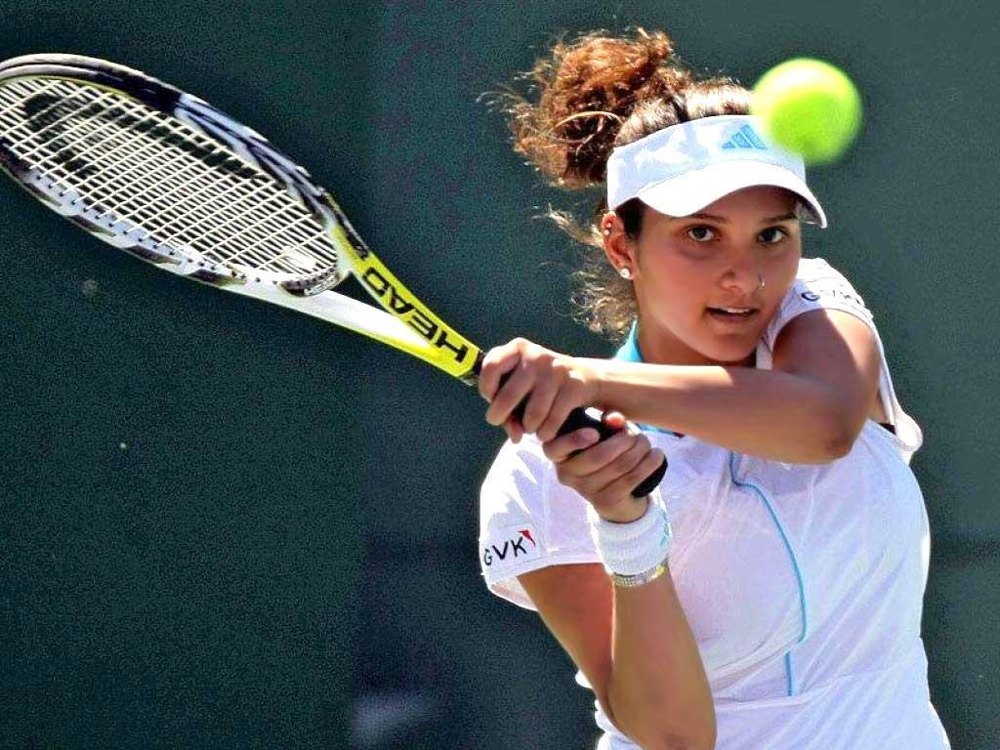
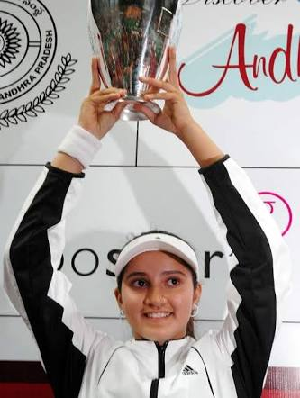
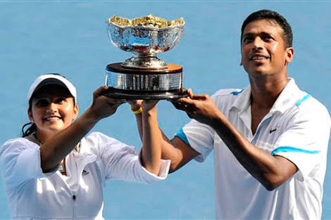
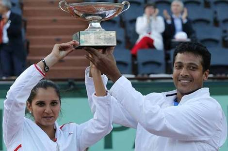
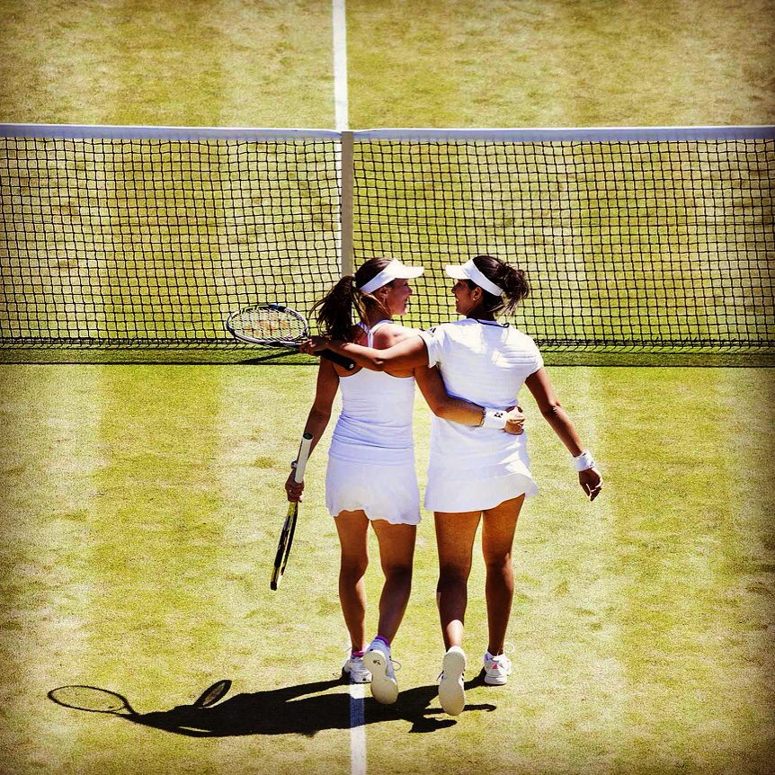
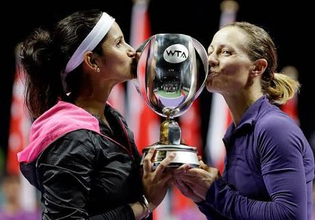

There was never a shade of doubt on whether or not Sania Mirza had it in her to succeed at the highest level. The potential was there for everyone to see from an early age. Her victory in the 2003 Wimbledon Championship Girls' Doubles proved it. But the step up to the next level wasn't going to be an easy affair.
Early Years
Her first success at the senior level was winning the AP Tourism Hyderabad Open 2005, her hometown event . Good performances at the Majors followed . Third round appearance at the Australian Open and fourth round at the US Open in 2005 propelled her up the rankings and subsequently be named as the WTA Newcomer Of The Year 2005.
Strides In The Single Circuit
Strong performance in the singles circuit in 2006 and 2007 helped her make her way into the top 30 in the world, and being ranked as high as 27 once . But that was all it was to be as injuries blighted her progress . Her next noticeable success was her win the 2009 Australian Open mixed doubles partnering Mahesh Bhupathi . In spite of that , her struggles with injuries continued . She became more of a doubles player and later on won the 2012 French Open mixed doubles alongside Mahesh Bhupathi .
Focus On Doubles
In 2013 , she retired from the singles circuit to focus entirely on the doubles. Success followed in the 2014 US Open where she claimed the mixed doubles crown with Bruno Soares of Brazil. This helped her reach a high of number six on the WTA Doubles rankings .
 2015:A New Dawn
2015 saw the beginning of a new chapter in her professional career. She paired up with Swiss legend Martina Hingis. They won their first three tournaments together namely the Indian Wells Open , Miami Open , and the Family Circle Cup . These wins helped Mirza become the first Indian to be ranked world number one in WTA's Doubles rankings . Later the same year , they won the Wimbledon Championships Women's Doubles title, undoubtedly her biggest success till date. A win at The US Open and the Guangzhou Open showed that their earlier success wasn't a mere flash in the pan . They also became the first team to qualify for the World Tour Finals 2015 .
 An Inspiration For Billions
Her journey from a humble beginning to the very top of the world has been phenomenal to say the least . Every time she steps on to the court , she is looked upon by her fans and countrymen . Her script couldn't have unfolded in a more spectacular way than what it has been and she truly makes a billion hearts swell with pride .